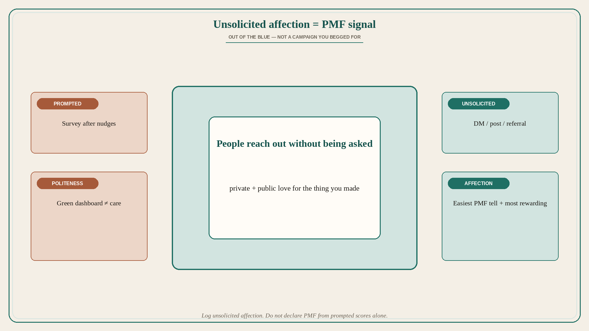

PMF shows up as unsolicited acts of affection from users
Source: Guillermo Rauch (@rauchg)
original post
What it claims
The easiest way to tell you have product-market fit is unsolicited acts of affection from users. People reach out of the blue, in private and in public, to tell you how much they love the thing you created. That is incidentally the most rewarding part of it all. (Full post text fits in the API response — no note_tweet expansion needed.)
Why it matters for a PO
Dashboards can be green while nobody cares. Unsolicited love — DMs, posts, “I told my team about this” without a prompt — is a sharper PMF signal than a survey you begged for. A PO who only celebrates NPS after a campaign is measuring prompted politeness, not affection.
3 takeaways
- Easiest PMF tell: unsolicited acts of affection from users.
- Out-of-the-blue private and public love beats prompted feedback.
- That signal is also the most rewarding part of building — notice it.
Practice this week
Start a running log of unsolicited affection (DM, email, public post, referral you did not ask for). This week, count how many appear without a campaign. If the count is zero, do not declare PMF from a survey score alone.